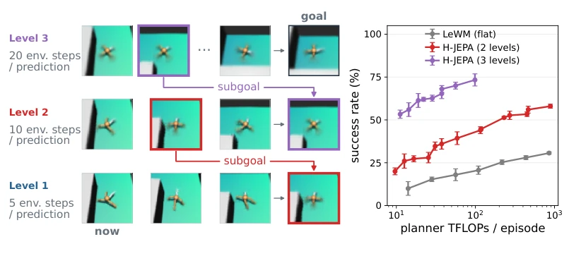
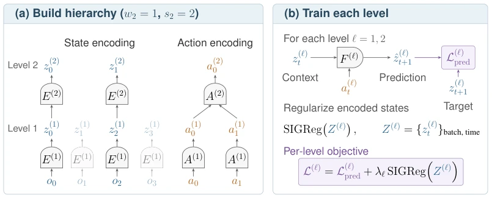
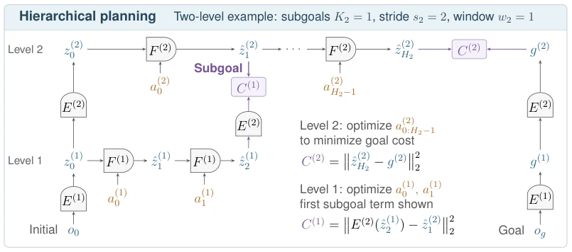
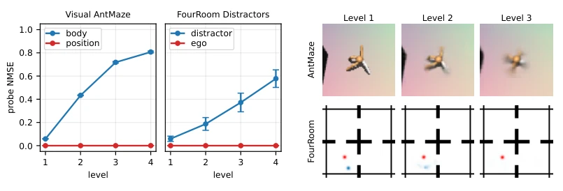
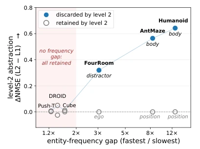
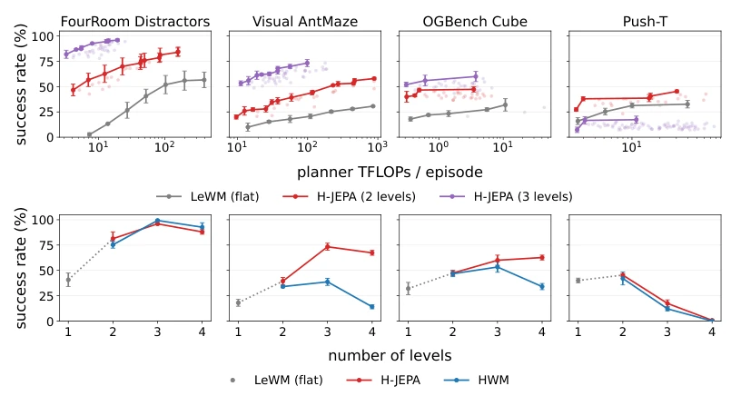
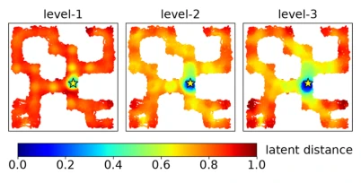
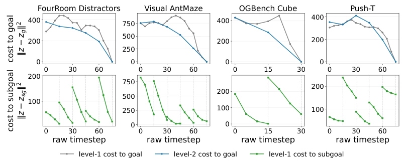
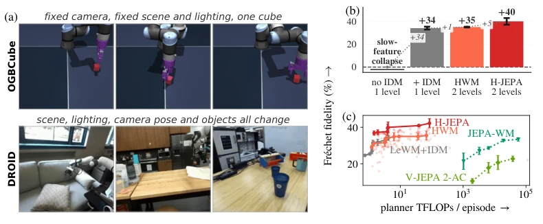
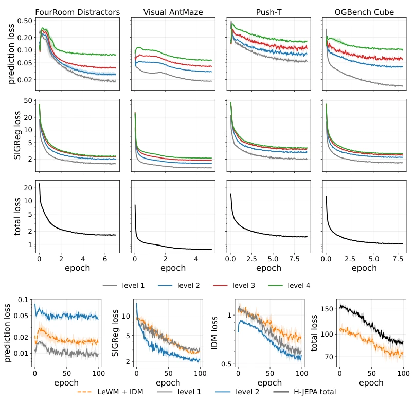

This paper on H-JEPA is simply a "hierarchical surgery" for the JEPA family, forcibly elevating the originally flat prediction model into a "pyramid". The LeCun team this time did not engage in fancy pixel reconstruction, but instead allowed the high-level to "out of sight, out of mind", filtering out those unpredictable fine details (such as how an ant's legs move), retaining only slow but useful states (such as where the ant is). This strategy of "selective forgetting" is indeed effective for long-horizon planning; AntMaze success rate increased from 18% to 73%, serving as a textbook example of "less is more". However, a critique: this method has high requirements for data duration; short tasks (such as Push-T) fail directly, indicating it is not a panacea and still depends on data distribution. Additionally, although inverse dynamics were added to address real-world scenarios, it essentially still relies on offline planning, and closed-loop real-world control still needs to wait. Overall, this transforms "hierarchical" from theory into a trainable end-to-end architecture; although somewhat "picky", it is picky with sound reasoning.
Existing task-agnostic JEPA world models (e.g., LeWM [53]) can perform zero-shot planning within a single latent space, yet face two critical limitations: first, a single time scale leads to accumulated prediction errors over long horizons and an exploding search space; second, a single latent space struggles to accommodate both low-level dynamics details and high-level abstract goals, causing failure when matching abstract goals (e.g., reaching a specific location) due to the inclusion of excessive fast-changing details (e.g., limb postures). Although existing hierarchical world models (e.g., HWM [92]) attempt hierarchical structures, they share the same latent space and cannot discard unpredictable fast-changing features at the high level, limiting abstraction capabilities. Furthermore, traditional hierarchical video models are mostly used for pixel reconstruction rather than control, whereas hierarchical reinforcement learning relies on reward signals. H-JEPA aims to address these pain points by constructing hierarchical independent latent spaces, allowing the high level to focus on slow, predictable task-related states, thereby improving long-horizon planning efficiency and success rates.

Figure 1: Hierarchical abstractions support planning at multiple timescales. Left: visualization of hierarchi- cal planning in Visual AntMaze. Level 3 plans toward the final goal in the most abstract latent space. Its first predicted state becomes a subgoal for the level-2 planner; this decomposition recurses to the level-1 planner, which outputs raw actions. The first and last columns decode each level’s start and goal latents, respectively; the middle columns decode its planned predictions. Higher-level latents retain the ant’s position and maze layout while losing leg-pose detail. See §2.2 for the formal planning procedure. Right: planning success versus planner compute on AntMaze. Curves show Pareto fronts for flat LeWM [53] and two-/three-level H-JEPA; error bars are standard error (S
H-JEPA proposes an end-to-end hierarchical JEPA training and planning framework. The overall process is divided into two stages: training and planning. In the training stage, the model constructs a hierarchical structure where Level 1 handles raw observations, while Level 2 and higher levels perform temporal downsampling (stride) and aggregation (window) on the latent states output by lower levels, forming more abstract latent representations. Each level possesses independent encoders, action encoders, and predictors, and each performs prediction learning in independent latent spaces, with the goal of minimizing the difference between future latent states and real states, assisted by SIGReg [6] regularization to prevent feature collapse. The planning stage adopts a "top-down" strategy: the top-level planner optimizes actions in the abstract space to minimize the distance to the final goal, converting its predicted trajectory into subgoals passed to the next level; the next-level planner then optimizes actions to match the subgoals provided by the upper level, until Level 1 outputs raw actions. This mechanism achieves dual optimization of temporal decomposition and abstract representation. To address the feature collapse problem caused by background changes in real-world scenarios (e.g., DROID), the authors introduced an inverse dynamics (Inverse-Dynamics) supervision term in the loss function, forcing the model to learn action transitions between states, ensuring the encoder retains dynamic information related to actions.

Figure 2: H-JEPA training across temporal scales. (a) With w2=1 and s2=2, level 2 encodes every other level-1 state pointwise and aggregates the intervening action embeddings. Faded columns are retained at level 1 but skipped at level 2. (b) Each level predicts the next latent state conditioned on preceding latent states and actions, with SIGReg regularizing the states against collapse. All levels are trained end-to-end, with gradients from upper-level objectives propagating through lower-level encoders.

Figure 3: Planning runs top-down through the hierarchy, and the lower level is steered by subgoals the upper level predicted. Two-level instance (L=2) of §2.2. Current and goal observations o0 and og are encoded bottom-up into initial states z(1) 0 , z(2) 0 and goal states g(1), g(2). Level 2 optimizes macro-actions by unrolling F (2) and matching its final prediction to g(2). Its predicted states ˆz(2) i become subgoals for level 1, which optimizes primitive actions and lifts its predictions through E(2) for comparison in level-2 latent space (Eq. (6)).
Experiments were conducted on four simulated environments (FourRoomDistractors, Visual AntMaze, Push-T, OGBench Cube) and one real-world robot dataset (DROID). Baselines include the flat LeWM [53] and the shared latent space HWM [92]. Evaluation metrics primarily include task success rate (simulated environments) and Fréchet fidelity (real-world scenarios). Results show that in Visual AntMaze, the three-layer H-JEPA increased the success rate from 18% to 73%, with lower computational costs. Ablation experiments indicate that the benefits brought by hierarchy stem from two mechanisms: "temporal decomposition" and "high-level abstract goal representation"; the high-level latent space can more accurately measure the distance to abstract goals, while temporal decomposition breaks long tasks into easily solvable subproblems. On the DROID dataset, after introducing the inverse dynamics loss, H-JEPA effectively avoided feature collapse, significantly outperforming models without hierarchy or without inverse dynamics. Notably, in short-horizon tasks (Push-T), the hierarchical model performed poorly, confirming the method's dependence on data duration and frequency separation.

Figure 4: Selective abstraction across hierarchy levels. Left: MLP-probe NMSE (mean ± SE over three training seeds) at successive levels of four-level H-JEPAs on Visual AntMaze and FourRoomDistractors. Body state or distractor position becomes less recoverable at higher levels while agent position remains recoverable. Right: one observation decoded from levels 1–3; decoders serve only for visualization. AntMaze’s leg pose becomes less distinct; FourRoom’s blue distractor fades while the red agent remains visible.

Figure 5: Larger temporal-frequency gaps correlate with stronger selective abstraction. The x-axis mea- sures temporal separation in each training dataset: the ratio of the characteristic frequencies (spectral centroids) of the fastest- and slowest-varying state components, shown on a log scale. The y-axis shows the change in per-entity probing NMSE from level 1 to level 2; positive values indicate poorer recoverability at level 2. Across environments, larger frequency gaps coincide with greater increases in fast-entity probing error (filled markers), while slow-entity error remains near its level-1 value (open markers). Environments with gaps below 2× (shaded region) show little selective abstraction.

Figure 6: Gradient-based planning across compute budgets and hierarchy depths, comparing LeWM [53], H-JEPA, and the hierarchical world model baseline HWM [92]. Error bars in both panels show one SE over three seeds. Top: success versus planner FLOPs per episode, sweeping action-sample counts with other planner settings fixed. FLOPs include forward and backward passes. Bold curves are Pareto fronts. Bottom: success versus hierarchy depth on a separate set of 50 tasks per environment. Planner settings are selected under a 100-TFLOP planning budget. See §E for protocols and Fig. 9c for the DROID results.

Figure 7: Planning cost geometry on AntMaze. Dis- tance to anchor ⋆in each latent space of a three-level H-JEPA (blue near, red far; one training seed). Higher levels show more graded costs along corridors and a broader low-cost region around the anchor.

Figure 8: Temporal decomposition of planning costs. We analyze a two-level H-JEPA with s2 = 3. Top: Goal cost in level-1 and level-2 space. For a held-out expert trajectory we encode each frame at both levels, and compute the distance between each timestep’s latent z(ℓ) t and the goal (final-timestep) latent, ∥z(ℓ) t −g(ℓ)∥2 2. At level 2 we subsample at the training stride. Bottom: Subgoal tracking cost. The level-2 subgoals are the level-2 latents at the subsampled timesteps. Within each subgoal segment we re-anchor the level-1 rollout from the encoded latent at the segment start, unroll it to the next subgoal, project it into level-2 space, and measure its distance to that subgoal. Within each segment, the cost decreases monotonically toward the next subgoal.

Figure 9: Scene diversity makes the inverse-dynamics loss necessary, and a second level adds performance at a lower planner budget. (a) First frames of three Cube and three DROID clips, showing scene variation across episodes. (b) DROID at 5 fps, Fréchet fidelity (%), showing the slow-feature-collapsed LeWM, LeWM+IDM, then two hierarchies: HWM, whose level 2 is an identity encoder, and H-JEPA, whose level 2 is learned. (c) The one-level and two-level models of (b) swept over planner budgets, Fréchet fidelity against measured planner TFLOPs per episode on a log axis, the bold line being the Pareto front. Two frozen-encoder world models are shown for reference: they are public checkpoints, evaluated at their native 1 fps on the 15 clips whose window fits at that rate, so their intervals span
其他图片Other Figures

Figure 10: Per-level training losses of the four-level H-JEPA models and of the DROID models. Top three rows: unweighted prediction loss and SIGReg statistic of each level of the four-level models over training, and their total training objective, the sum over levels of the prediction loss plus the weighted SIGReg term. Every level of a model uses the same SIGReg weight (0.18 on FourRoom, 0.09 elsewhere), so the weighted curves differ from the unweighted ones by a constant factor per environment. The seed band of the total objective is narrower than its line. Bottom row: unweighted prediction, SIGReg and inverse-dynamics losses of the DROID flat LeWM+IDM (orange, dashed) and of both levels of the two-level H-JEPA (solid) over their 100 training epochs, and the total training objective, the